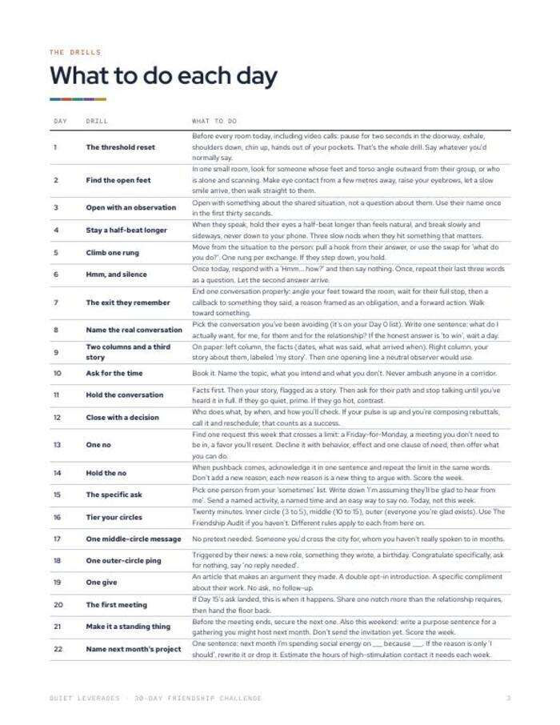
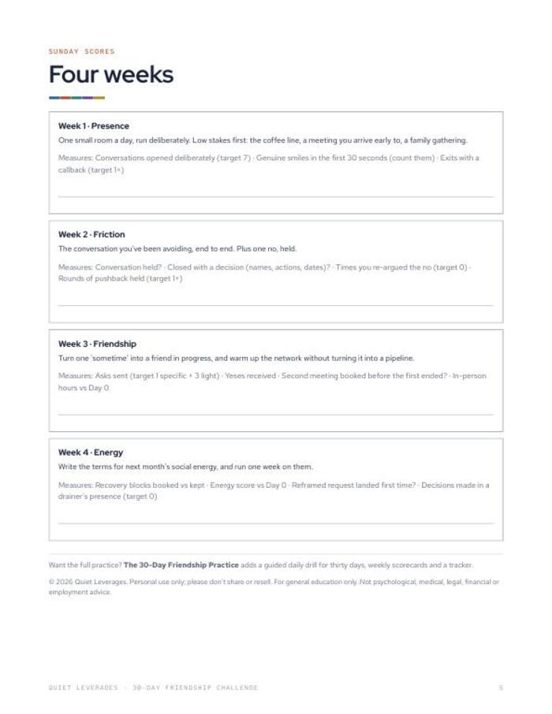

You keep meaning to see people more. Give it thirty days and one small drill a day.
A thirty-day calendar with a named drill each day, from saying hello to hosting. Low stakes first, no forced networking.
Instant download. Print it or use it on a tablet with any PDF app. Prints fine on A4 at 'fit to page'.

One drill a day
A named drill for each of thirty days, on one calendar you can stick on a wall.
Every drill explained
A page says what to do for each day, so you are not guessing.
Low stakes first
The early days are small. The later days build up to hosting.
drills, one a day
weekly themes
of adults aged 30-44 are frequently or always lonely, the highest of any age group. Friendship skills are habits, and habits come from repetition in low-stakes rooms.
Harvard Making Caring Common, 2024What you leave with
A plan for the days you would skip
The calendar names the drill, so you do not have to decide what to do.
Four themes, four Sunday scores
Each week has a theme and a Sunday prompt, so you can see what moved.
No forced networking
The drills are small and ordinary. They are not about collecting contacts.
A path to the full practice
If thirty days works, The 30-Day Friendship Practice adds scripts and a tracker.
A calendar, the drills, and four Sunday scores
Do one drill, check it off, and score the week on Sunday.
- 30-day calendar with a named drill each day.
- A page explaining every drill.
- Four weekly themes with Sunday score prompts.
- Printable PDF. US Letter, prints on A4 at 'fit to page'.


Do one, check it off, score Sunday
Do one drill a day
Check it off and write one word about how it went.
Score the week
Use the Sunday prompts for that week's theme.
Repeat a week if needed
If a week did not land, run it again before moving on.
A good fit if you want a small, steady start
Use this if
- You want a daily nudge without a big social overhaul.
- You want something to check off, not another book to read.
- You are happy to start with low-stakes moments.
Skip it if
- You want sixty scripts and a tracker. See The 30-Day Friendship Practice.
- You are looking for therapy or clinical support. This is a practice calendar.
- You want one big weekend of networking. The drills are small by design.
Why small and regular wins, in numbers
In-person time with friends fell from about 60 minutes a day in 2003 to about 20 in 2020.
American Time Use Survey dataof Americans have no close friends, up from 3% in 1990.
Survey Center on American Life, 2021of time together to move from acquaintance to casual friend; about 90 to friend, 200+ to close friend.
Jeffrey Hall, University of Kansas, 2018What readers say about 30-Day Friendship Challenge
Start Day 1 tomorrow
A calendar, thirty drills and four Sunday scores in one PDF.
- 30-day calendar with a named drill each day
- A page explaining every drill
- Four weekly themes with Sunday score prompts
Before you decide
How much time does it take each day?
One small drill a day. The drills page says what each one involves, so you can look ahead.
What format is it?
A printable PDF, US Letter, 5 pages. It prints fine on A4 at 'fit to page'.
Can I use it on a tablet?
Yes. Any PDF app will do, or print the calendar and tick the boxes.
What if I miss a day?
Pick up where you stopped, or repeat the week before you move on. The Sunday score tells you which.
Is it therapy or advice?
No. It is a practice calendar. General education only; not medical or mental-health advice.
The next step after this one


Thirty days, one small drill each.
Start with a hello. End by hosting.
Get the challenge for $7One-time $7 on Gumroad. Instant download.